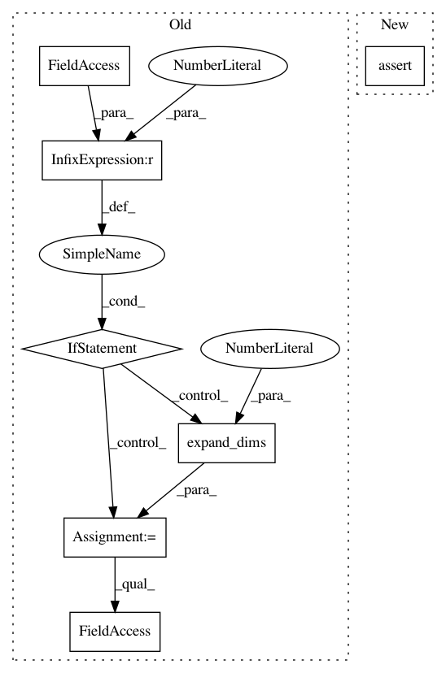

37d6a53cad2695ee387cfa6ffd0e88f96e8ff699,geomstats/special_orthogonal_group.py,SpecialOrthogonalGroup,rotation_vector_from_matrix,#SpecialOrthogonalGroup#Any#,201
Before Change
:param rot_mat: 3x3 rotation matrix
:return rot_vec: 3d rotation vector
if rot_mat.ndim == 2:
rot_mat = np.expand_dims(rot_mat, axis=0)
n_rot_mats = rot_mat.shape[0]
assert rot_mat.shape == (n_rot_mats,) + (self.n,) * 2
rot_mat = closest_rotation_matrix(rot_mat)
trace = np.trace(rot_mat, axis1=1, axis2=2)
if trace.ndim == 1:
trace = np.expand_dims(trace, axis=1)
assert trace.shape == (n_rot_mats, 1), trace.shape
After Change
rot_mat = vectorization_utils.expand_dims(rot_mat, to_dim=3)
n_rot_mats, mat_dim_1, mat_dim_2 = rot_mat.shape
assert mat_dim_1 == mat_dim_2 == self.n
rot_mat = closest_rotation_matrix(rot_mat)
trace = np.trace(rot_mat, axis1=1, axis2=2)
In pattern: SUPERPATTERN
Frequency: 3
Non-data size: 7
Instances
Project Name: geomstats/geomstats
Commit Name: 37d6a53cad2695ee387cfa6ffd0e88f96e8ff699
Time: 2018-03-16
Author: ninamio78@gmail.com
File Name: geomstats/special_orthogonal_group.py
Class Name: SpecialOrthogonalGroup
Method Name: rotation_vector_from_matrix
Project Name: geomstats/geomstats
Commit Name: 37d6a53cad2695ee387cfa6ffd0e88f96e8ff699
Time: 2018-03-16
Author: ninamio78@gmail.com
File Name: geomstats/special_orthogonal_group.py
Class Name:
Method Name: closest_rotation_matrix
Project Name: geomstats/geomstats
Commit Name: 37d6a53cad2695ee387cfa6ffd0e88f96e8ff699
Time: 2018-03-16
Author: ninamio78@gmail.com
File Name: geomstats/special_orthogonal_group.py
Class Name:
Method Name: vector_from_skew_matrix